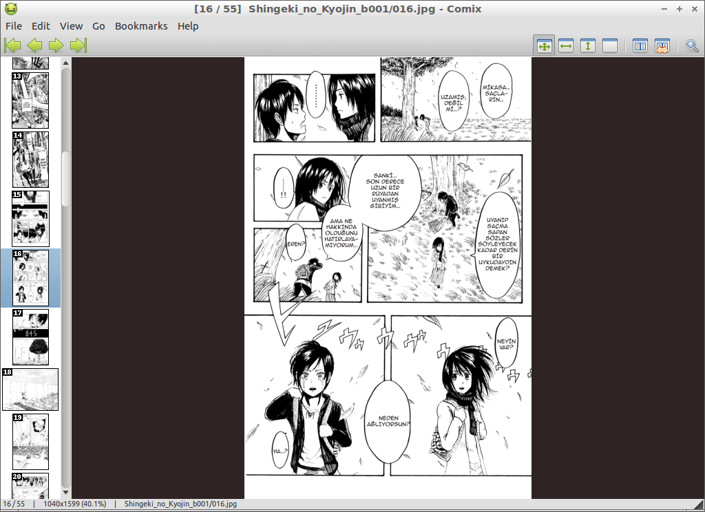

Çok sevdiğimiz çizgi romanları bilgisayardan okumak, epey meşakkatli olabiliyor. Resim görüntüleyici programları ile açıp okumak, insanı çizgi romandan bile soğutur. Ama bunu kolaylaştıran güzel bir uygulamamız var: Comix.
Çizgi roman ve manga okumak ayrı bir tutku. Dürüst olmak gerekirse ben bu işin kurtların sayılmam. Hatta epey acemisiyim. Ama animelere bayılırım (Hatta bu konuda sayfalar dolusu yazı yazabilirim :)) Öyle anime serileri var ki onları izlemek yetmez, bir de üstüne mangasını okuyasınız gelir (ya da bana öyle oluyor). Bu mangaları ya da farklı çizgi romanları dijital ortamlarda okumak güçleşebiliyor. İşte Comix, bu noktada devreye giriyor.
Comix, Python tabanlı basit bir resim görüntüleyici aslında, ama özellikle çizgi romanlar için tasarlanmış. Comix’te .jpg, .png, .cbr formatındaki belgeleri rahatlıkla açabildiğiniz gibi .zip, .tar, .rar vb. sıkıştırılmış dosyaların içindeki görselleri de açabiliyorsunuz. Tabii bunları, basit resim görüntüleyici programlarda açabilirsiniz. Oysa Comix, daha çok .pdf okuyucu gibi çalışıyor. Bazı açılardan yanlış bir benzetme yapmış olabilirim de benim gibi “düz bilgisayar kullanıcı”sıysanız Comix, size de Evince’i anımsatabilir.
Benim çizgi romanlarım ağırlıklı olarak .jpg ve .cbr formatında. Mesela “V for Vendetta” sıralı .jpg belgelerinden oluşuyor. Bu belgelerden birini Comix’te açmam, onun sıralı bir biçimde, okunmak üzere ekranımda belirmesi için yeterli oluyor. Ekranın sol tarafında tüm dosyanın önizlemesini görmek de mümkün.

Eğer başka bir çizgi romanı açmak istersem, birinde kaldığım yere ayraç ekleyip diğer belgeyi açabilirim. Açtığım diğer belge, Hobbit.cbr belgesi. Yine buna da ayraç eklersem artık üstteki menüde yer alan “Bookmarks” ile çizgi romanlarım arasında kolaylıkla geçiş yapabiliyorum. Yani bir belgeyi Comix’te bir kere açınca, ayraç eklediğim sürece, Comix üzerinden bütün çizgi romanlarıma erişimimi sağlıyor (Her defasında dizindi, dosyaydı, bu neredeydi diye uğraşmıyorum yani.).


Bir de sayfa boyutlandırması özelliği hakkında konuşalım. Comix size dört farklı seçenek sunuyor bu noktada. Sayfayı ekrana enine, boyuna göre yerleştirebilir ya da ben kendim büyütüp de okurum, sen bir şey yapma, diyebilirsiniz. Yine sayfa görünümü açısından da ayarlamalar mevcut. Dedik ya çizgi romanlara göre tasarlanmış diye, çizgi romanlarınızı yan yana iki sayfa veya tek sayfa görüntüleyebilirsiniz. Hatta, art arda gelen sayfaların yerini değiştirmeniz de mümkün.


Bütün bunları sağ üst köşedeki altı butonla yapabiliyorsunuz.

Menüleri oldukça kolay Comix’in. Belki Edit > Preferences menüsü üzerinde biraz durabiliriz. Burada üç farklı basamak çıkıyor karşımıza: Apperance, Behaviour, Display. Bu menü üzerinden uygulamanızın nasıl görüneceğini, sonraki sayfaya nasıl geçiş yapacağınızı, açılışta sizi hangi ekranın karşılayacağını düzenleyebiliyorsunuz.
Unutmadan Comix’in Ubuntu Yazılım Merkezi’nde yer aldığını da söyleyelim.
Keyifli okumalar…